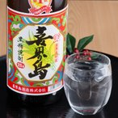

敬老の日 送料無料 黒糖焼酎 喜界島 アルコール 25度 一升瓶 限定生産 焼酎 くろちゅう 喜界島酒造 株式会社 鹿児島県
【モンドセレクション優秀品質金賞を受賞している珍しい黒糖焼酎。】黒糖焼酎は鹿児島県の奄美群島でのみ製造されている希少な焼酎です。「黒糖焼酎 喜界島」は、創業100余年の老舗焼酎蔵「喜界島酒造」で、黒糖を主原料にミネラル分をたっぷり含んだ天然硬水を仕込み水として常圧蒸留の方法で造られている本格焼酎です。一年以上の貯蔵熟成を経て仕上げられる「黒糖焼酎 喜界島」は、発売から今日まで多くの方々に親しまれている喜界島酒造のロングセラー商品です。甘い香りと爽やかな喉ごしが楽しめ、大変バランスのよい味わいですので、和洋食を問わず水割りやお湯割りでお楽しみいただけます。商品の価値を評価するモンドセレクションでは2012年から連続して優秀品質金賞を受賞しています。【事業者名・販売者名】喜界島酒造 株式会社【所在地】鹿児島県